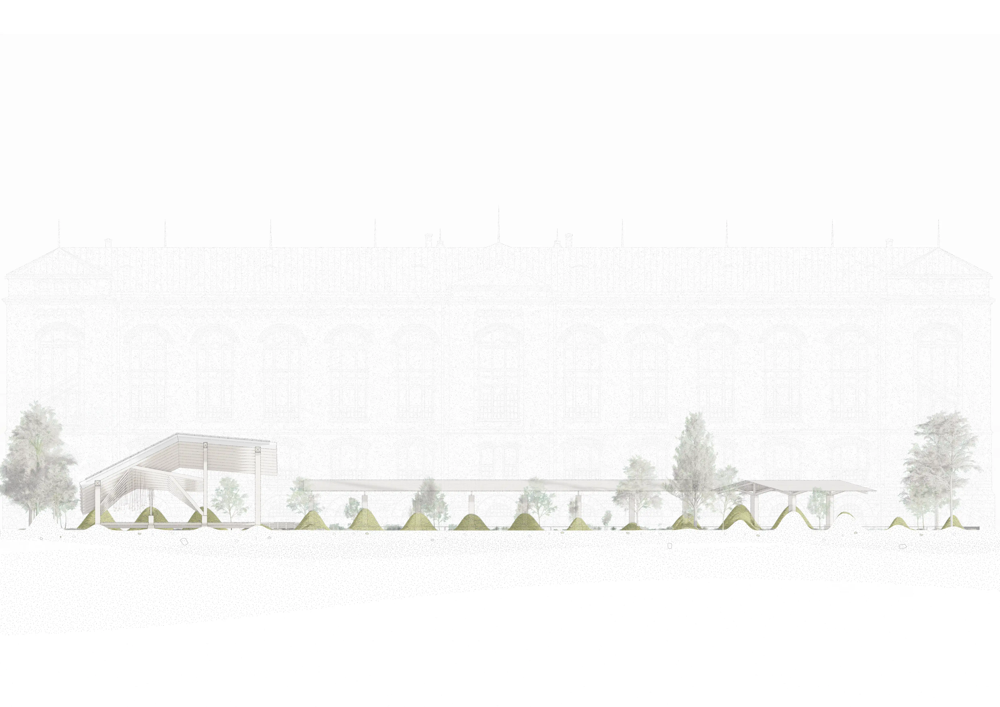
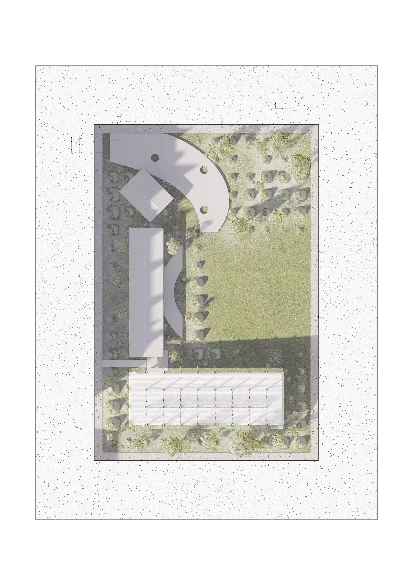
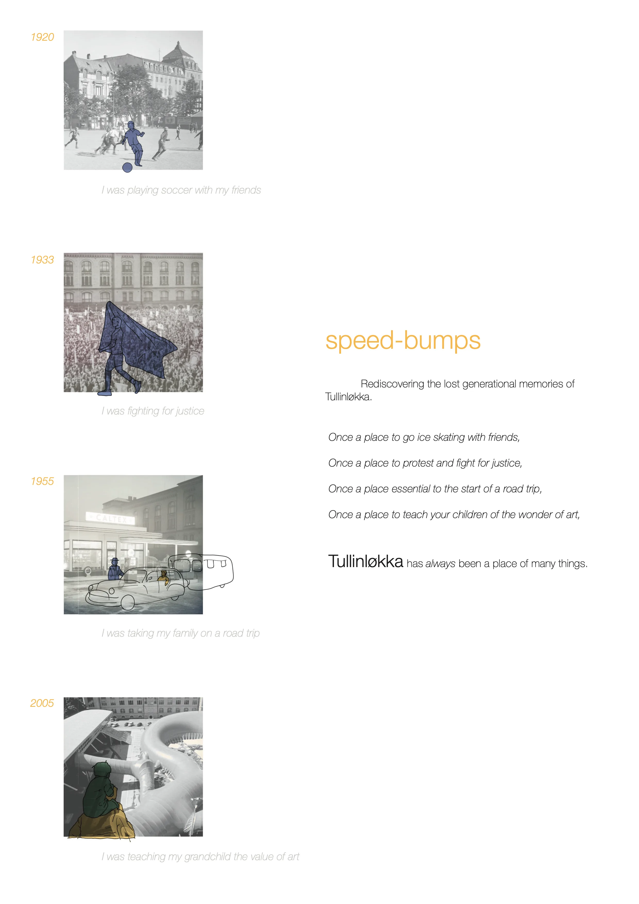
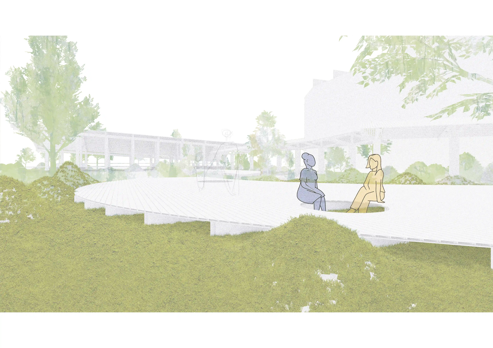
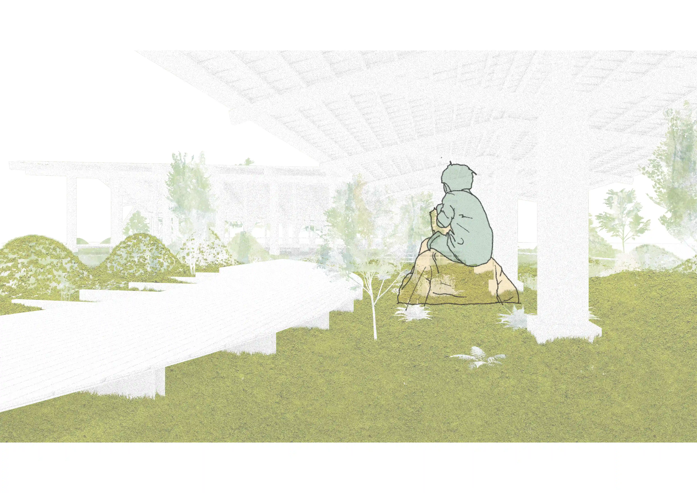
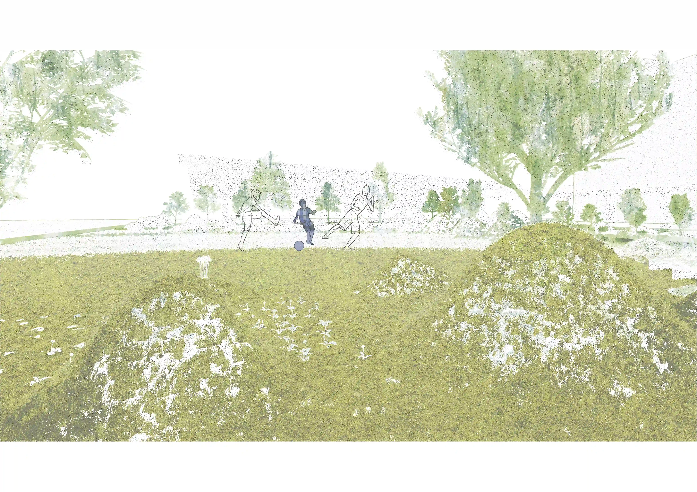
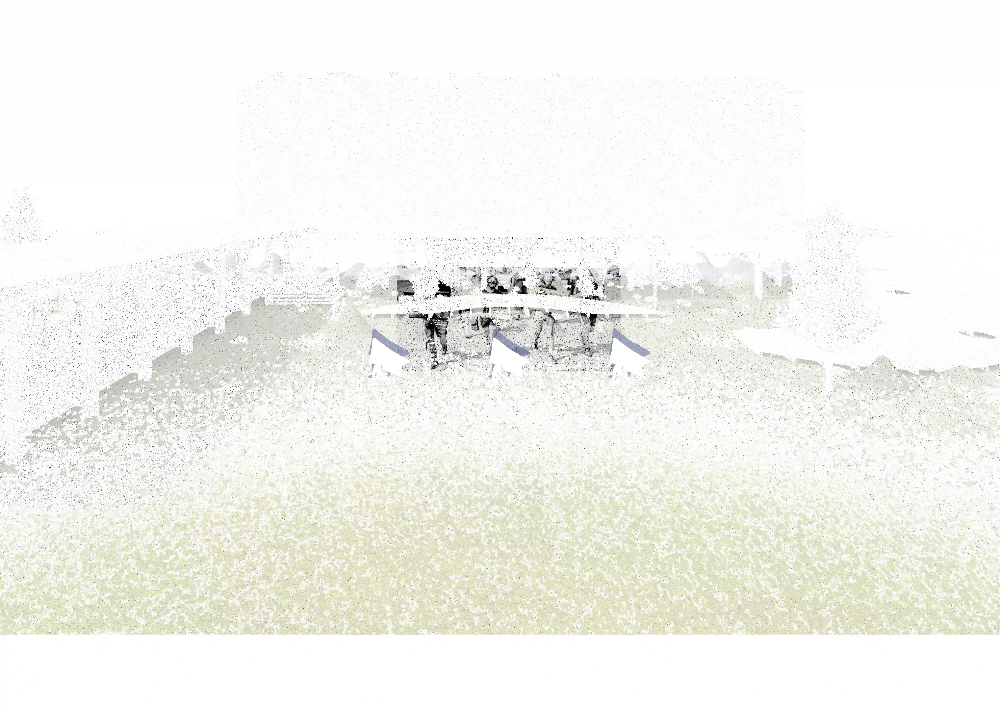

120 hours is a competition run by the Oslo School of Architecture in which students have 120 hours to respond to a brief.
This year, the brief was to creative an exhibit of 'lost items' in the public square of Tullinløkka, Oslo. I responded by proposing a space that
encompassed the lost memories and activities of Tullinløkka.
Generations have shared memories of it’s historically flexible identity, though in recent years, it’s identity has grown stagnant.
The younger generation has not inherited the same richness of experience that their parents and grandparents once found here.
‘Speed-bumps’ seeks to revive the lost memories
of Tullinløkka. It proposes a landscape where children can
engage in the same variety of activities once native to the
site and enjoyed by their parents and grandparents. Rolling
grassy mounds of varying heights invite people to play, to
protest, to gather, and to be curious. They confront the
user with ‘a degree of slowness’, as discussed by Jean
Baudrillard in The Illusion of The End. They are a means of
inducing contemplation - a necessary friction that re-engages
awareness of your immediate, physical environment.
Location: Oslo, Norway
Year: 2025
Institution: Oslo School of Architecture
Competition: 120 Hours